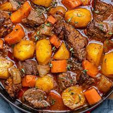

Beef Stew

Description
A food dish that combines beef with a variety of other ingredients, such as potatoes,
vegetables, herbs, spices, and broth to create a savory dish, rich in flavor and often
served as the main dish. There are many different versions of beef stew made in various
countries from the ingredients that are readily available.
The cut of meat most often chosen for making Beef Stew is chuck,
which comes from meat extending from the foreleg to the shoulder of a steer.
The chuck is a good piece of meat to cook slowly in moisture, breaking down
the connective tissues into a tender piece of meat that is rich in flavor.
Since the chuck extends from the upper foreleg to the shoulder there are a few
different options that can be considered for the cuts of chucks. The top blade,
blade, flat iron, shoulder, 7 bone roast, or chuck short ribs all provide
good chuck meat for making Beef Stew.
Ingredients
- ¼ cup all-purpose flour
- ¼ teaspoon freshly ground pepper
- 1 pound beef stewing meat, trimmed and cut into inch cubes
- 5 teaspoons vegetable oil
- 2 tablespoons red wine vinegar
- 1 cup red wine
- 3½ cups beef broth, homemade or low-sodium canned
- 2 bay leaves
- 1 medium onion, peeled and chopped
- 5 medium carrots, peeled and cut into ¼-inch rounds
- 2 large baking potatoes, peeled and cut into ¾-inch cubes
- 2 teaspoons salt
Steps
-
Combine the flour and pepper in a bowl, add the beef and toss to coat well. Heat 3
teaspoons of the oil in a large pot. Add the beef a few pieces at a time; do not overcrowd.
Cook, turning the pieces until beef is browned on all sides, about 5 minutes per batch;
add more oil as needed between batches.
-
Remove the beef from the pot and add the vinegar and wine. Cook over medium-high heat,
scraping the pan with a wooden spoon to loosen any browned bits. Add the beef, beef broth and bay
leaves. Bring to a boil, then reduce to a slow simmer.
-
Cover and cook, skimming broth from time to time, until the beef is tender,
about 1½ hours. Add the onions and carrots and simmer, covered, for 10 minutes.
Add the potatoes and simmer until vegetables are tender, about 30 minutes more.
Add broth or water if the stew is dry. Season with salt and pepper to taste.
Ladle among 4 bowls and serve.